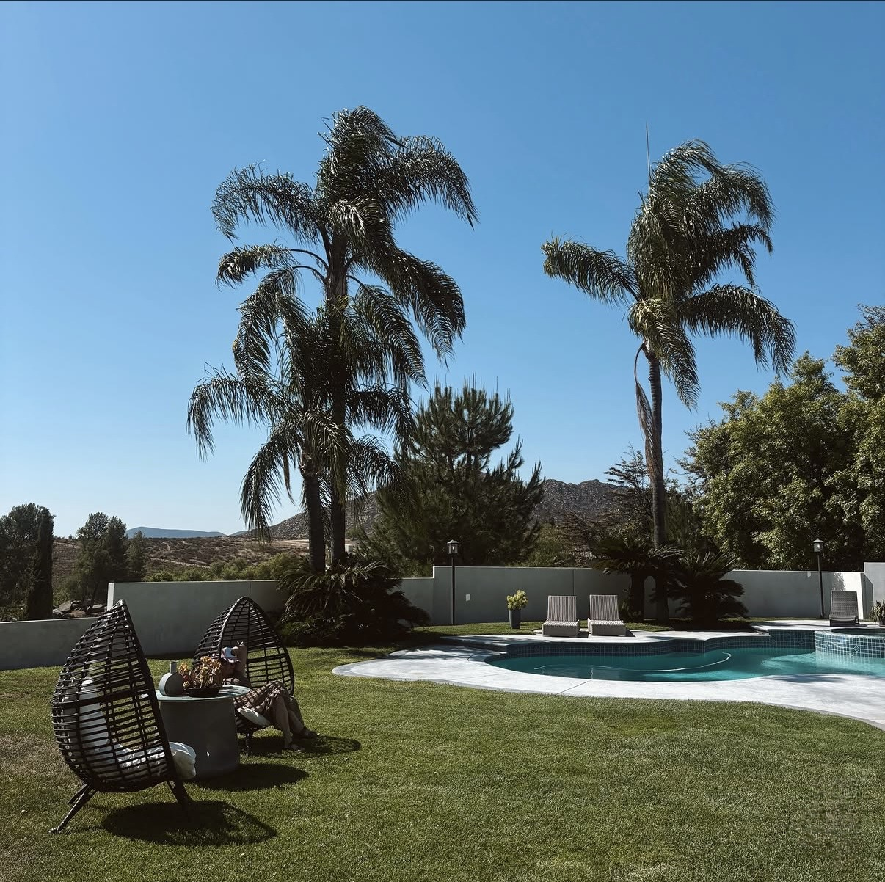
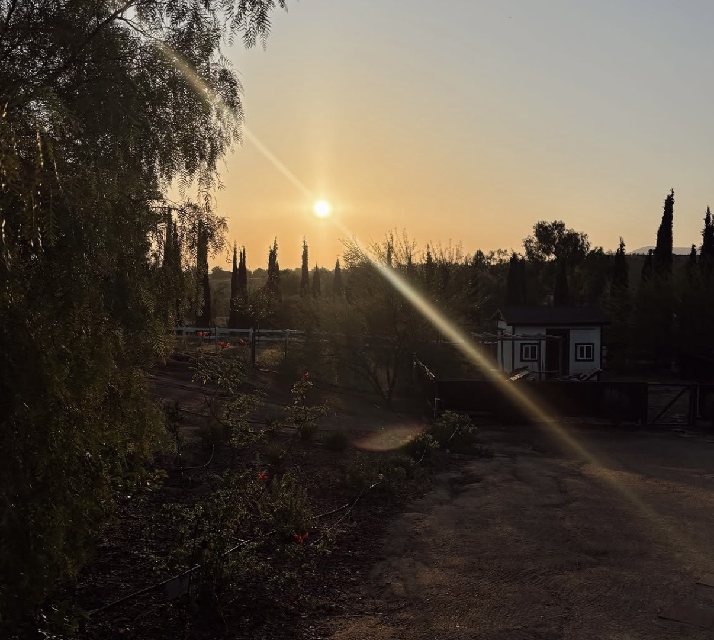
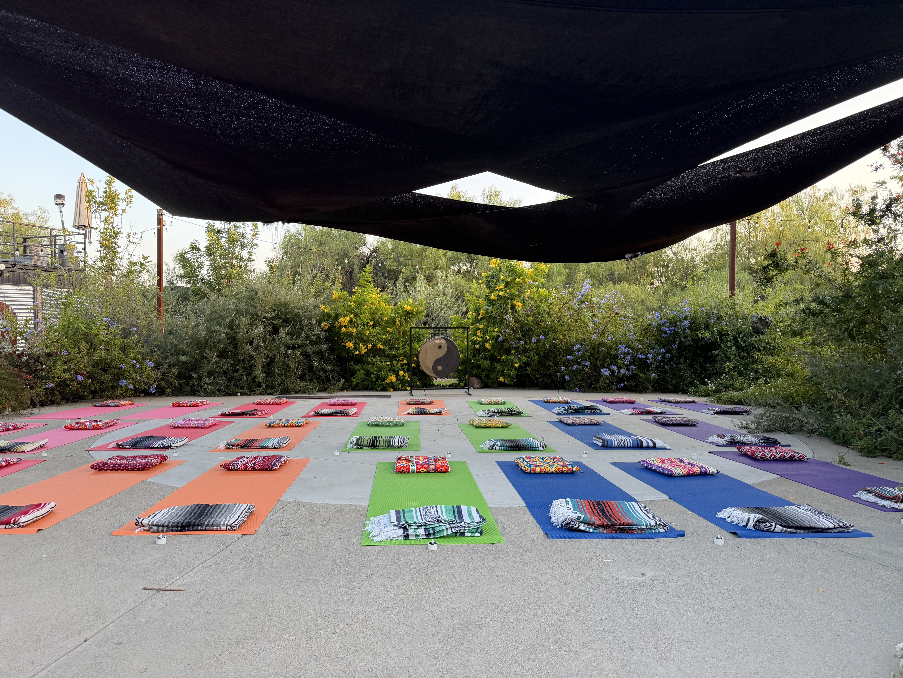
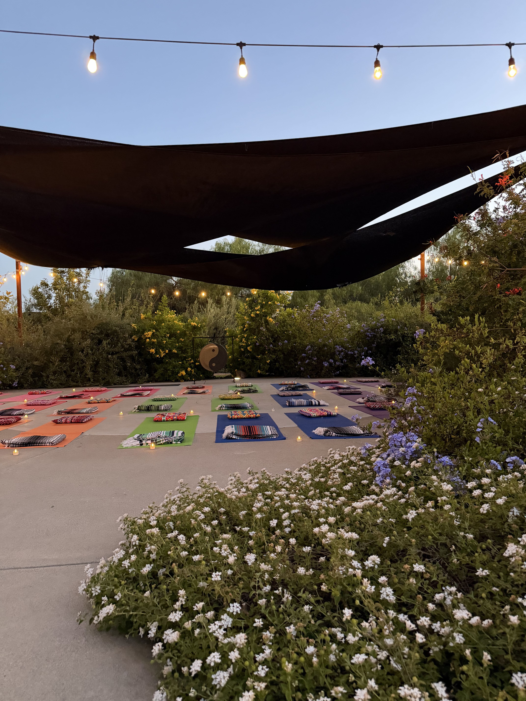
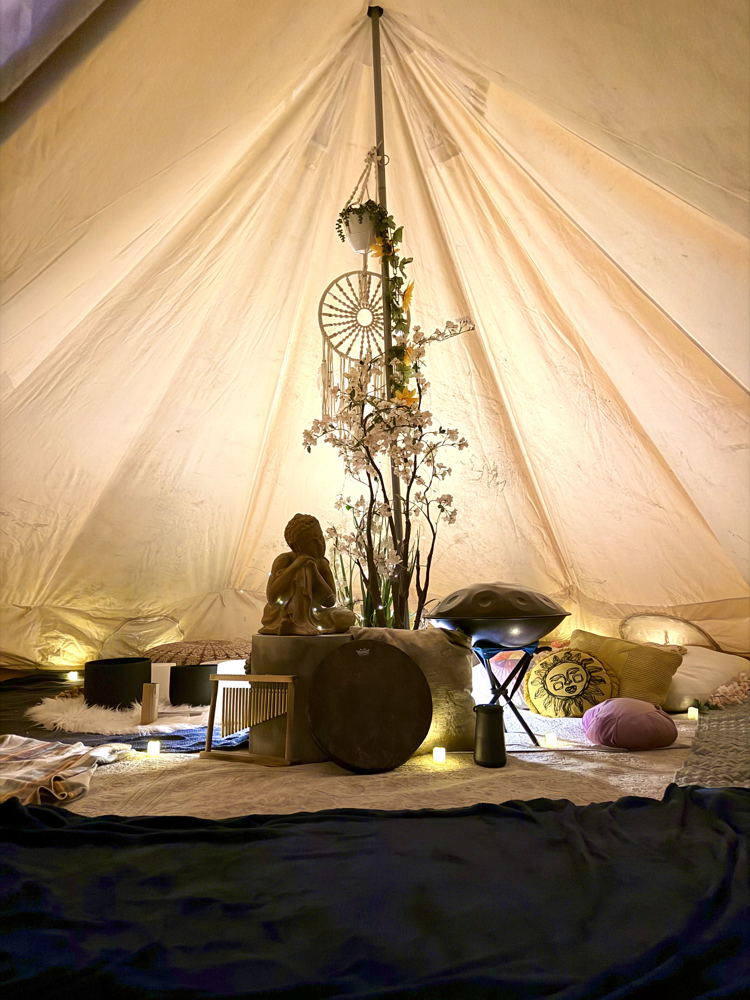
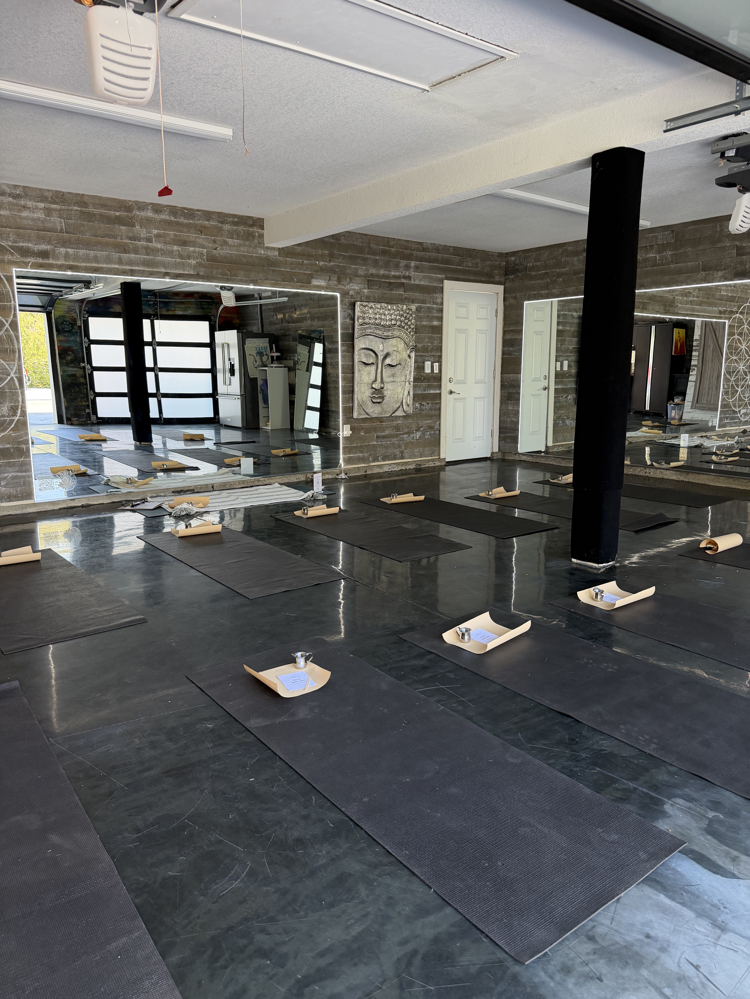
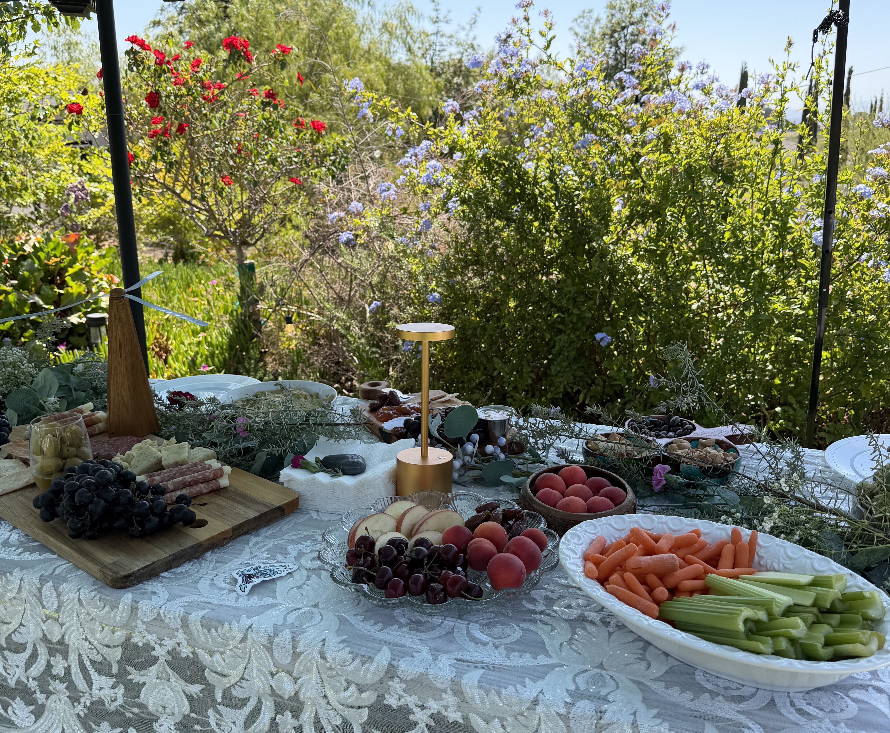
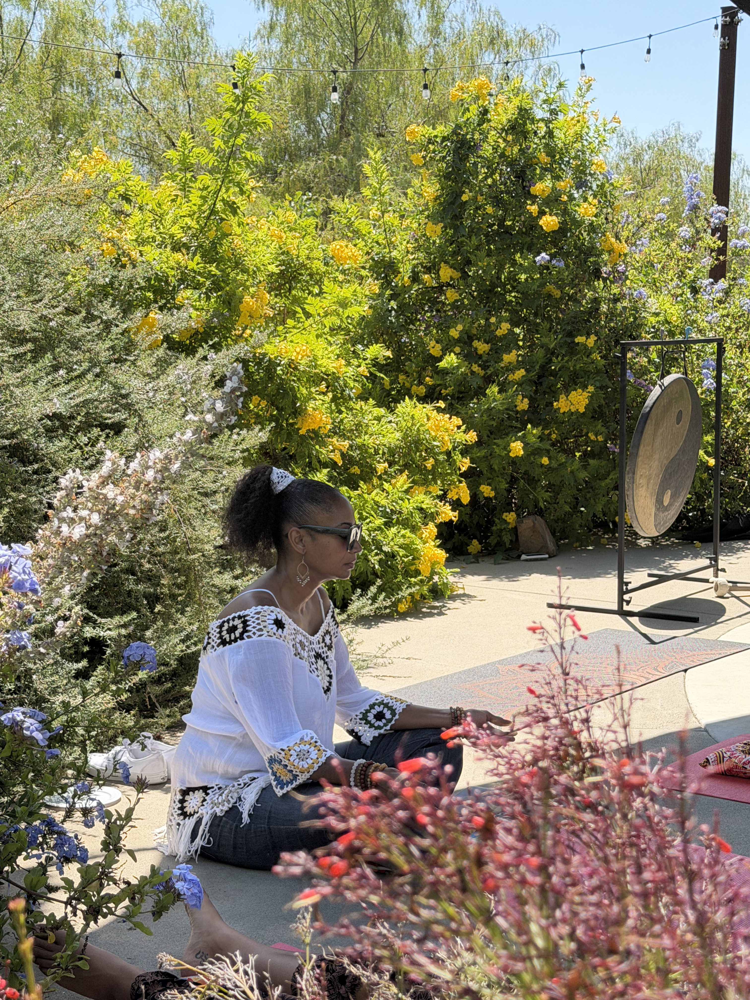
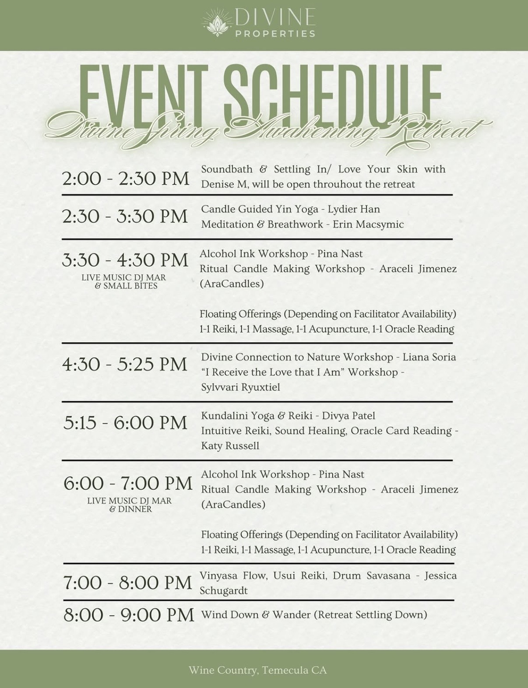

Project Overview
Designing the container
for transformation
The Divine Spring Awakening Retreat was a seven-hour, multi-element wellness experience held at a private estate in Wine Country, Temecula. Across four distinct spatial environments — an outdoor yoga sanctuary, a floral arch arrival moment, a bell tent healing chamber, and an indoor studio — I designed and executed the full atmosphere, spatial layout, and sensory environment that held the experience.
My role was not to facilitate the modalities themselves, but to design the container that made every modality possible — the spatial choreography, the material language, the lighting, the flow between zones, and the overall sensory register that invited guests into a state of openness from the moment they arrived.
Modalities hosted
The Setting
Wine Country as
sacred landscape
The private estate in Temecula Wine Country provided a rare backdrop — rolling hills, palm trees, a natural garden environment, and the quiet that allows transformation to happen. Part of the design work was reading the property's existing energy and letting it inform every spatial decision made.

The estate — Temecula Wine Country. Palm trees, mountain backdrop, and the natural quiet that holds sacred gathering.

The close of day — golden light dissolving over the valley as the retreat settled into its final hours.
Spatial Design
Four environments.
One coherent world.
The retreat unfolded across four distinct spatial zones, each with its own atmosphere, material language, and emotional register — but all connected by a single thread of intentional design.
The Arrival Portal
A circular floral arch framing the estate's Buddha statue — the threshold guests crossed to enter the experience. Purple wisteria, white roses, eucalyptus, and golden hour light. The first signal that this was a different kind of gathering.
The Outdoor Sanctuary
An open-air yoga floor beneath a shade canopy, bordered by wild flowering gardens and anchored by a standing gong. Colorful mats, woven cushions, Mexican blankets, and votive candles — vibrant yet grounded in the natural landscape.
The Bell Tent Sanctuary
An intimate healing chamber inside a canvas bell tent — altar with Buddha, blooming branches, dream catcher, singing bowls, handpan, and frame drum. Candlelight and warm ambient glow. Designed for the most private, inward experiences of the day.
The Indoor Studio
The property's existing yoga studio — black mats, mirrored walls with sacred geometry, each mat prepared with a personal ceremonial tray. Designed for focused practice and small-group work in a contained, intentional environment.
01 · The Setup
Before the guests arrived
Every space was composed before the first guest arrived — each mat, each candle, each floral placement considered as part of the overall sensory environment.





02 · The Experience
The container, alive
When guests arrived, the spaces came to life. What had been carefully composed became inhabited — the environment doing exactly what it was designed to do.

03 · Experience Architecture
Seven hours of
intentional flow
The schedule was designed as an emotional arc — from settling in through soundbath, to active workshops and 1:1 sessions, to evening movement, music, and wind down. The spatial transitions between zones were part of that arc, each environment calibrated for the energy of its moment in the day.

04 · As Experienced
What guests shared
The most authentic documentation of an experience is what people choose to share in the moment — when the design has done its job and guests want others to feel what they're feeling.